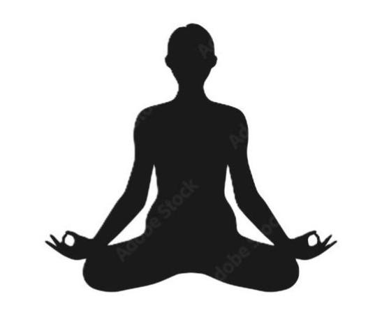

Background
Meditation is an ancient practice that has gained significant attention in modern psychology and neuroscience. It generally involves focusing the mind on a particular object, thought, or activity to achieve a mentally clear and emotionally calm state. Today, meditation is often studied for its potential effects on stress, attention, and emotional well-being.
Researchers have explored how meditation may affect the brain and body, and some studies suggest changes in areas related to attention, memory, and emotional response. For example, research has linked regular meditation to differences in brain regions associated with focus and stress regulation, although the strength of evidence varies depending on the effect being studied.
Meditation has also been connected to possible physical health benefits, such as lower blood pressure and improved sleep. While not all claims are supported equally, the growing body of research suggests that meditation may be a useful tool for improving certain aspects of mental and physical health when practiced consistently.

Learn more from this scientific findings here. For even further information on this topic, check out the article's references.